Sistema de Automação de Cargas Vagas
Identifica as cargas vagas de professores da rede estadual com mais agilidade e segurança: cada município é analisado, revisado e consolidado em um só lugar.
- Importar
- Analisar
- Revisar
- Consolidar

Identifica as cargas vagas de professores da rede estadual com mais agilidade e segurança: cada município é analisado, revisado e consolidado em um só lugar.